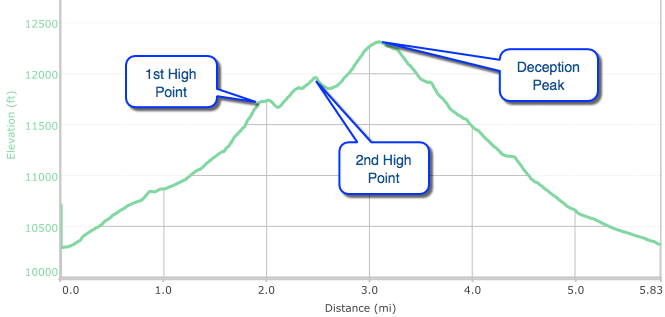

Hike New Mexico
w/ Tom & Ken
Deception Peak Hike
| Difficulty | Round-trip | Type | Elev. Chg. | Exposure | Wow Factor | Facilities | Seasons | Flickr | By Car |
|---|---|---|---|---|---|---|---|---|---|
| Difficult | 6.3 miles | Loop/Out-back | 2200 ft | Sun w/ shade | Great vistas! | Parking Lot | Not Winter | Album |  |



- Jun 21, 2016: From a boulder field, a view of Aspen Peak
- Jun 21, 2016: The more uncommon view of Mt Baldy
- Jun 21, 2016: Behind Tom are Lake Peak (left) and Deception Peak
- Jun 21, 2016: Those last steps at high altitude aren't so easy!
- Jun 21, 2016: Summit at last!
- Jun 21, 2016: A beautiful view of Lake Nambe from Deception Peak
- Jun 21, 2016: Returning via the ski run
- https://www.flickr.com/photos/139088815@N08/27761201191/in/photostream/
- https://www.flickr.com/photos/139088815@N08/27837077745/in/photostream/
- https://www.flickr.com/photos/139088815@N08/27802722936/in/photostream/
- https://www.flickr.com/photos/139088815@N08/27225055903/in/photostream/
- https://www.flickr.com/photos/139088815@N08/27802705536/in/photostream/
- https://www.flickr.com/photos/139088815@N08/27761240371/in/photostream/
- https://www.flickr.com/photos/139088815@N08/27558983020/in/photostream/
Deception Peak is one of the four "twelvers" (peaks over 12,000 ft) in the Santa Fe area. Two of the remaining three can be reached with some additional effort from Deception Peak. There are actaully two approaches to the summit: hiking along "Ravens Ridge" from the Winsor Trail, and also from the Ski Basin ski lift area. Taking the ski lift trail up provides far less shade - both are steep. From Ravens Ridge, there are several lookout points that offer excellent views of Mt Baldy, and when higher, the Sangre de Cristos - to Pecos Baldy and beyond. Owing to the altitude and steepness, it is not a quick hike, and is rated as difficult or strenuous - justly so.